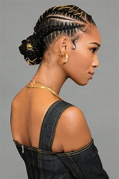
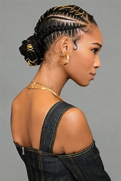

Cornrows or As some of Us would Call it "Push Back"
It is adaptable wether its thick or thin and this protective style will last you up to several weeks.Its not only braided close to your scalp using a underhand technique to create raised plait but it also looks good on the eye.
With Your Own Hair it will cost You R50.00 but with Braids it will cost You R70+R10.
Pattern of choice (R5 pattern+R5 Product Use)Here is a preview of some styles.
 
